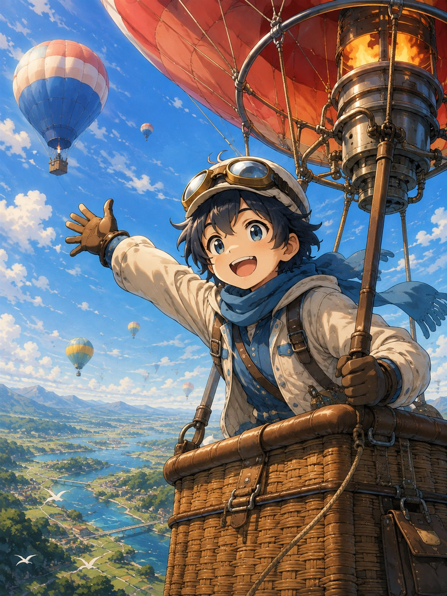
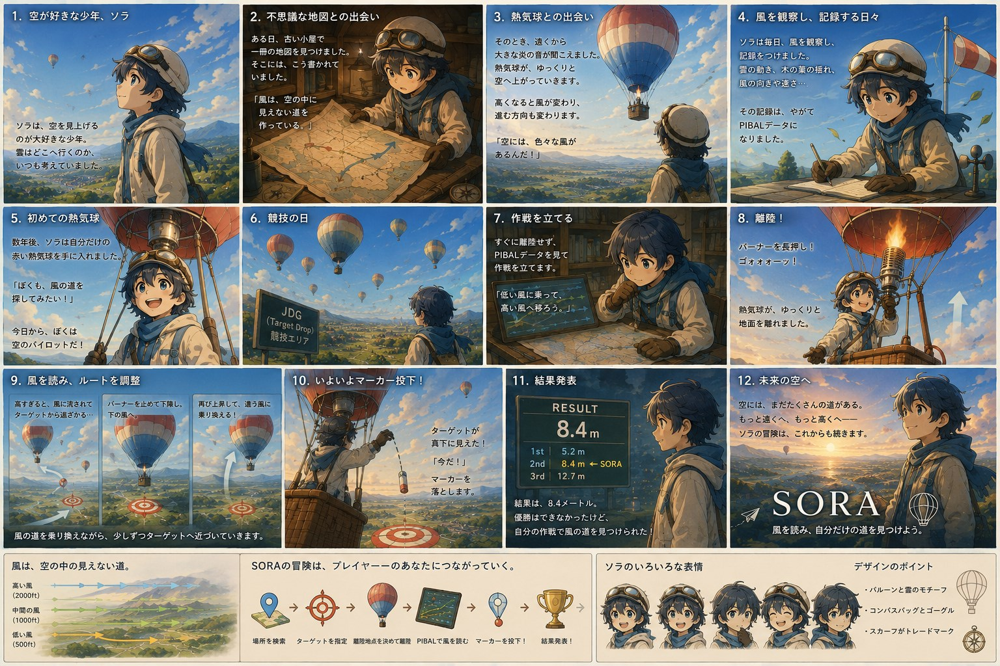

ドラッグ・スクロールで動かせます

このゲームの遊びかたは、まんがでひととおり分かるようになっています。 文字を読むのがめんどうなときは、まずこれだけ見れば大丈夫です。

物語の中で SOYOKA の SORA がやっていることは、そのまま SORA の遊びかたです。 風を読む → 高さを選ぶ → 目標へ近づく → マーカーを落とす。 くわしくは、この先で順に説明していきます。
SORA は、熱気球を飛ばすシミュレーターです。 ブラウザで開くだけで遊べます。アプリを入れる必要はありません。
地面の形は、国土地理院が公開している本物の地形データから作っています。 だから、自分の住んでいる町の上を飛ぶこともできます。
ここが、この遊びのいちばん大事なところです。
飛行機やドローンとちがって、熱気球には前に進むための装置がありません。 ハンドルもアクセルもついていません。自分でできるのは、 上がるか下がるかの2つだけです。
では、どうやって行きたい方向へ進むの？
空の風は、高さによって向きも速さもちがいます。
地面の近くでは北へ流れているのに、500m 上では東へ流れている、ということがふつうに起きます。
だから熱気球は、行きたい方向へ吹いている高さまで上下して、その風に乗るのです。
「高さを選ぶこと」が「方向を選ぶこと」になります。
SORA でうまく飛べるようになるコツは、操作をすばやくすることではありません。 どの高さにどんな風が吹いているかを読むことです。
| Space（長押し） | バーナー。空気をあたためて上がります。押しっぱなしにするほど強く上がります。 |
|---|---|
| R（長押し） | リップライン。気球のてっぺんの穴を開けて熱をにがし、下がります。着陸のときに使います。 |
| M | マーカー投下。目標をねらって、おもり（マーカー）を落とします。 |
| V | 視点の切りかえ。ゴンドラの中から見る ⇔ 外から気球を見る。 |
| 1 2 3 4 | 時間を早送り。×1 / ×2 / ×4 / ×8。風がゆっくりで退屈なときに使います。 |
| P | パイバル表の表示・非表示。高さごとの風の一覧です（次の章で説明します）。 |
| マウスをドラッグ | 見る向きを回します。 |
| マウスのホイール | 拡大・縮小します。 |
画面の下にボタンが出ます。指でさわって操作します。
| 🔥（長押し） | バーナー。上がる。 |
|---|---|
| RIP（長押し） | リップライン。下がる。 |
| 📍 | マーカー投下。 |
| 👁 | 視点の切りかえ。 |
| ×1 | 時間の早送り（押すたびに変わります）。 |
| P | パイバル表の表示・非表示。 |
| 画面をなぞる / 指でひろげる | 見る向きを回す / 拡大・縮小。 |
| 大きな数字（ft） | いまの高さ。フィートという単位です（1ft ≒ 0.3m）。本物の気球でもフィートを使います。 |
|---|---|
| 高度(MSL) | 海面から数えた高さ（m）。 |
| 対地高度 | 地面から数えた高さ（m）。ぶつからないためにはこちらを見ます。 |
| 昇降 | 1秒に何メートル上がっているか。プラスなら上昇、マイナスなら下降。 |
| 風(現在高度) | いまいる高さの風。「◯◯° / ◯◯kt」＝ 風が吹いてくる向きと速さ。 |
| 燃料 | バーナーを使うと減ります。0 になると上がれません。 |
| 状態 | 接地・上昇中などの、いまのようす。 |
| ターゲット | 目標までの距離と方角。 |
| マーカー | 残っているマーカーの数。 |
| 残り時間 | 競技の制限時間。 |
気をつけること：風の向きは「反対」に読む
気象の世界では、風向きは吹いてくる方角で表します。
「風 0°」は北から吹いてくるという意味なので、
気球は南へ流されます。ここを反対に覚えると、まったく逆へ飛んでいってしまいます。
高さごとの風の一覧表です。名前は「パイロットバルーン（pilot balloon）」から来ています。 本物の競技でも、小さなゴム風船を飛ばして上空の風を調べてから飛びます。
この表が作戦そのものです。 行きたい方向へ流してくれる風がどの高さにあるかを、ここで探します。
いまどちらを向いているか、目標がどちらかを示します。
むずかしく考えず、この順にやってみてください。
最初はうまくいきません。それでふつうです。 行きすぎたり、思った方向へ行かなかったりします。 本物の熱気球のパイロットも同じことをしています。 1回ごとに「どの高さがどっちへ行くか」を覚えていくのが上達の道です。
SORA の競技は JDG（ジャッジ・ディクレアード・ゴール）といいます。 実際の熱気球競技にある種目のひとつです。
| 目標（ターゲット） | 地図の上のオレンジ色の × のところ。 |
|---|---|
| やること | その上まで飛んでいって、マーカーを落とす。 |
| マーカー | 1本だけ（M で投下）。やり直せません。 |
| スコア | マーカーが落ちた場所から目標までの距離。短いほど良いです。 |
作戦のきほんは、目標の風上側から入っていくことです。 風上とは、風が吹いてくる側のこと。そこから目標に向かって流されるように高さを選びます。
画面の下にある「本格モード」から入れます。 飛ぶ場所・風・離陸地点を、自分で決められるモードです。
「開発途中版」というボタンもありますが、これは新しい機能をためすためのもので、 うまく動かないことがあります。慣れてからで大丈夫です。
熱気球には、飛んだ記録を残す機械（ロガー）が積まれていて、 IGC ファイルという形で保存されます。 SORA は、そのファイルを読んで飛んだ道すじを 3D で見せることができます。 「本格モード」→「飛行ログ(IGC)を読み込む」から使います。
| 見る | 飛んだ道すじを、外から自由に眺めます。 |
|---|---|
| 飛ぶ（復習） | その日の実際の風の中を、自分で操作して飛んでみます。 |
| なぞる（検証） | 本物の記録と、自分の飛びかたを並べて比べます。 |
ファイルは外に送られません。 読み込んだ飛行ログは、あなたのブラウザの中だけで処理されます。 どこかのサーバーへ送ったり、保存したりはしません。
| 上がらない | 燃料が 0 になっていませんか。また、バーナーはあたためてから効きはじめるので、すぐには上がりません。数秒待ってください。 |
|---|---|
| 止まらない・行きすぎる | 熱気球にブレーキはありません。目標より手前で操作をやめるのが正解です。 |
| 思った方向へ行かない | 風向きは「吹いてくる方角」です。気球はその反対へ流されます。P でパイバル表を見て、別の高さを試してください。 |
| 画面が真っ暗・進まない | 地形データの読み込みに時間がかかっています。少し待つか、ページを開きなおしてください。 |
| 動きがカクカクする | ほかのタブを閉じてみてください。3D の表示はパソコンに負担がかかります。 |